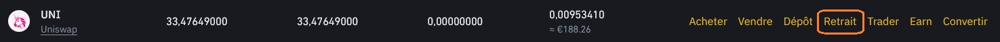

- 4. Transférer ses cryptomonnaies -
4.1 Introduction
Les transferts de cryptomonnaies sont simples à réaliser, mais quand on débute, il est facile de faire une erreur qui dans le pire des cas peut nous faire perdre ce qu'on veut envoyer.
Il y a donc deux choses à bien contrôler :
L'adresse du destinataire : comme les adresses dans la blockchain sont une longue suite de chiffres et de lettres, on utilisera toujours un copié-collé pour saisir l'adresse afin d'être sûr de ne pas faire d'erreur.
La sélection du réseau / la correspondance token - blockchain : Dans le hot wallet de votre exchange, vous pouvez stocker n'importe quelles cryptomonnaies sans distinction. Par contre quand vous allez vouloir envoyer vos monnaies sur votre wallet privé (Metamask, Ledger, etc....) vous devrez mettre vos monnaies sur la blockchain qui l'héberge et surtout pas sur une autre.
De même, si vous voulez envoyer une cryptomonnaie sur une plateforme, elle vous indiquera toujours le réseau par lequel vous devez passer (ex : réseau ERC20 pour la blockchain ethereum, réseau BEP20 pour la Binance smart chain, etc...)
En cas de doute sur la correspondance token - blockchain allez sur coinmarketcap.com, entrez votre cryptomonnaie dans la barre de recherche en haut à droite, et dans la section "Contrats" vous trouverez la liste des blockchains sur lesquelles sont hébergées votre monnaie.
4.2 Les frais de transaction / gaz fee
Les frais de transaction sont une partie très importante de la finance décentralisée car ils permettent de récompenser les personnes qui sécurisent les transactions, rendant la technologie blockchain très résistante aux fraudes et aux piratages. Ils permettent également de récompenser ceux qui mettent de la liquidité à disposition pour faire fonctionner le système correctement. Vous pourrez vous-même en bébéficier en "épargnant" vous cryptos et en profitant ainsi de taux de rendement intéressants. Allez voir le chapitre : 7. Stacking & Lending pour en savoir plus.
Les frais de transaction sont variables en fonction de la blockchain utilisée et de l'engorgement du réseau. Plus il y a de monde qui veut faire des transactions en même temps plus les frais montent.
Bon à savoir : Sur les wallets vous devrez payer les frais de transaction en utilisant le coin de la blockchain que vous utiliserez. Il vous en faudra donc une petite quantité pour les régler.
Depuis un cold wallet comme metamask, si vous voulez envoyer de l'argent ou faire un échange de crypto avec la Binance Smart Chain il vous faudra du BNB pour payer les frais de transaction, avec la blockchain Ethereum il vous faudra de l'ETH, avec la blockchain Bitcoin du BTC, etc.
Sur les exchanges pas besoin de vous préoccupez de cela, les frais seront généralement pris sur la monnaie que vous voulez transférer.
Les frais de transaction sont en général de quelques centimes sauf pour la blockchain Ethereum ou c'est quelques euros (une mise à jour va bientôt sortir pour abaisser drastiquement les frais.). Des surcoûts peuvent éventuellement être appliqués par les exchanges, mais une fois sur votre wallet privé plus de surcoûts possibles, vous payez juste le frais inhérent au fonctionnement de la blockchain.
4.3 Faire un transfert de Binance vers Metamask

Ouvrez votre Metamask, sélectionnez la blockchain sur laquelle vous allez envoyer votre monnaie puis copiez votre adresse en cliquant sur le double carré.
Adresse : collez votre adresse copiée au préalable.
Réseau : Sélectionnez le réseau sur lequel vous envoyez votre token.
Montant du retrait : Inscrivez le montant que vous voulez envoyer.
Vous pouvez voir tout en bas les frais que vous coûtera cette transaction.
Cliquez sur "RETRAIT"
Après cela, vous devrez renseigner un code qui vous sera envoyé par sms et par mail (ou un autre moyen en fonction du niveau de sécurité que vous aurez défini dans les paramètres Binance).
Le transfert prendra entre quelques secondes et quelques minutes en fonction de l'engorgement du réseau.
Rappel : Si vous ne voyez pas votre token apparaitre sur Metamask c'est sûrement que vous n'avez pas ajouté la vision du token, pour savoir comment procéder allez sur : 3.5 Comment ajouter une blockchain ou un token à Metamask
4.4 Faire un transfert de Metamask vers Binance
Commencez par aller chercher l'adresse dont vous aurez besoin. Sur Binance, allez dans votre portefeuille spot et cliquez sur "Dépôt".
Puis en haut à droite sur Dépôt de cryptos.
Sélectionner un coin : indiquez le token que vous allez transférer.
Dépôt vers : indiquez le réseau que vous allez utiliser (celui sur lequel est stocké la monnaie dans votre wallet).
Cliquez sur le double carré pour copier l'adresse que Binance va vous donner.
Vous pouvez maintenant ouvrir votre Metamask et cliquer sur la monnaie que vous désirez envoyer, vous tomberez sur cette page.
Puis choisissez "Envoyer".
Sélectionnez le montant que vous voulez transférer.
Metamask va vous indiquer les frais de transfert, appelé gaz fee ou frais de carburant en Français.
Il ne vous reste plus qu'à cliquer sur "Confirmer" et c'est fini.
Le total indiqué représente le montant du transfert + les frais de transaction.